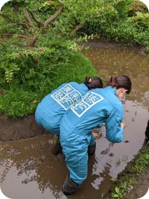
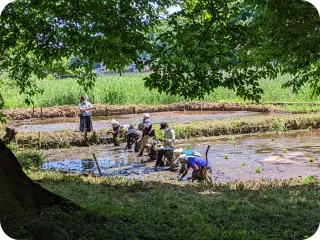

農楽塾の一年
SPRING
４月
- 春新歓
- ボラカフェ
田おこし↓

代掻き↓

「代掻き」とは、田起こしの後、
田植えの前に行われる作業です。
田んぼに水を張り、泥をかくはんし、
平らにします。
５月
- 春定植
「定植」とは、苗床やプラン
ターを畑に植える作業のこと
ステップ学級代掻き ↓
田植え ↓
SUMMER
６月
↓ とうがらしプロジェクト

農家訪問 ↓
里山保全 ↓
７月
- 前期総会
↓ 早稲田で田んぼプロジェクト
８月
ネット張り ↓
AUTUMN
９月
↓ ステップ学級稲刈り

10月
- 籾摺り
- 冬定植
- 古株すきこみ
里山稲刈り ↓

↓ バケツ稲プロジェクト

↓ 脱穀
11月
早稲田祭 ↓

WINTER
12月
- 後期総会
収穫祭 ↓

農楽塾では、学年・所属を問わずに新メンバーを募集しています。活動に興味をもたれた方は、ぜひ各種SNSからご連絡ください。新歓期間以外は随時個別に説明会をさせていただきます。